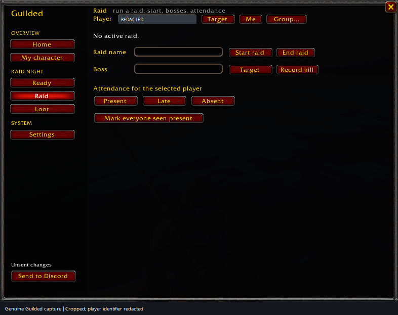
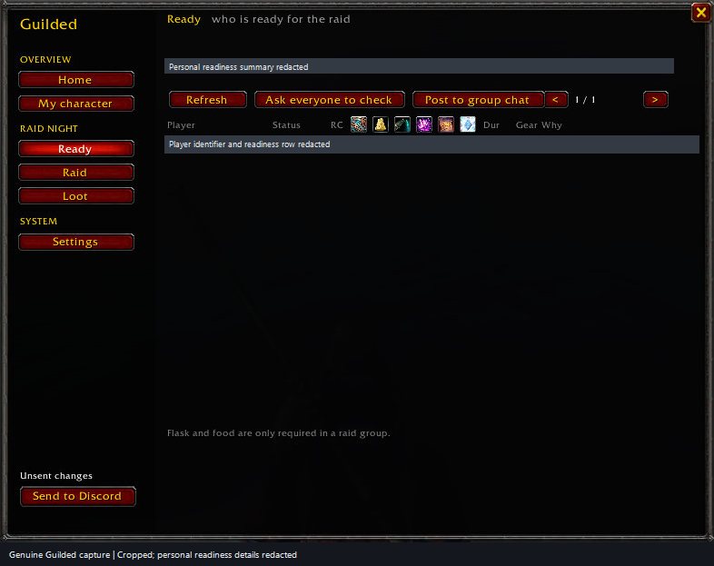

IN GAME
Your guild, where you play.
Standings, loot, recipes and the guild map in your guild window. Runs and seasons in the dungeon finder.
In-game featuresGuild standings, loot, crafters and dungeon runs, right inside WoW. Connect Discord later if you want.

WHAT YOU GET
IN GAME
Standings, loot, recipes and the guild map in your guild window. Runs and seasons in the dungeon finder.
In-game featuresON DISCORD · OPTIONAL
Signups, standings, activities and polls in your guild’s Discord server.
Add the botCOMPANION · OPTIONAL
Send your saved game data to your guild and bring updated standings back, from your browser or the Windows app.
Open the companionBUILT FOR THE MOMENTS IN GAME

Look up recorded recipes and profession cooldowns in one place. Available information depends on the data your guild shares.

Prepare the minimum GP and bidding timer, then follow your guild’s loot workflow. Permissions and agreed rules still apply.
Captured in game on 19 October 2026. Loaded addon version and game build are not displayed. These images show the labelled setup states; layouts vary by version.



GET STARTED
Get Guilded from CurseForge or the release page.
Click the gold minimap coin in game. Start with the in-game tools; shared views depend on available data and guild permissions.
Optional. Follow the member guide or, for guild owners, the bot setup guide.
YOUR NEXT STEP
PRACTICAL GUIDES · EN / FR
Folder paths, first launch and common fixes.
Installation / Installer →Core pools, loot rules and a complete record check.
EPGP / Points et butin →Free pilot, approval required. Five-server cap includes the owner; places depend on capacity.
Optional Discord / Facultatif →Yes, Guilded is free for noncommercial use. Tips help pay for hosting, but you never need to pay to download it, get the bot or ask for help.
No. The addon works on its own. Discord and the companion only add optional sync.
The hosted bot is a small free pilot: KCaron approves each Discord server before setup works. Follow the pilot guide or host your own bot.
A COMMUNITY AROUND THE TOOLS
Ask questions, share feedback and help shape what comes next. Downloads stay free; support is optional.